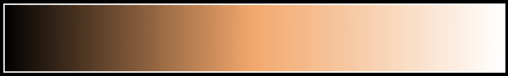
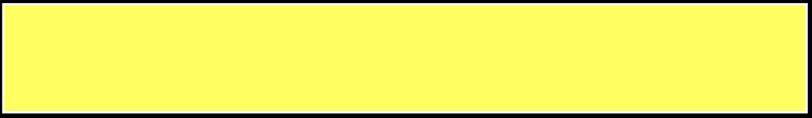
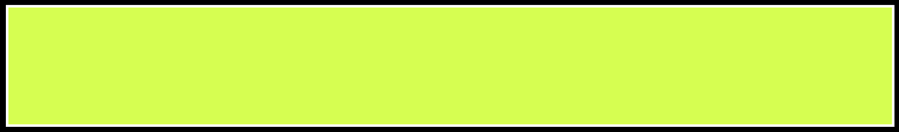

brightness
can describe either high luminosity or high saturation, according to the Helmholtz–Kohlrausch effect and/or Hunt Effect
lightness
describes both a high luminosity and low saturation
darkness
the opposite of lightness, or low luminosity
paleness
dullness: a measure of desaturation
deep/royal
may refer to darkness and/or high saturation; unrelated to color depth
pure, bold, vivid, rich
all referring to high saturation

neon
bright, in either of the word's connotations; alluding to the bright glow of neon lighting.
fluorescent
very bright, sometimes also highly saturated. Named after the fluorescence effect of pigments and dyes, which can produce a luminous glow when viewed under UV light, thereby appearing significantly brighter than their surroundings.
pastel
refers to colors with high luminosity and low saturation.